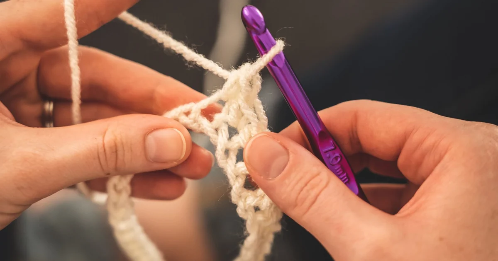

Tools, Yarn & Materials · Beginner guide
How to Store Crochet Yarn and Supplies
Store yarn so it stays clean, dry, and easy to identify, with loose ends contained but not compressed.

Storage is mostly about protecting yarn and remembering what each partial skein is. A simple system can prevent tangles without special organizers.
Before you begin
Keep labels or record fiber, weight, color, and dye lot before removing wrappers. Avoid dampness and direct sun.
Step-by-step instructions
- Keep each project’s yarn and notes together so the pattern and hook are easy to find.
- Contain partial skeins in a bag or bin and leave the strand end accessible without winding it tightly.
- Separate scraps by label or container if you plan to use them for practice.
- Check stored yarn before using it, especially if it has been kept for a long time.
What to check
Keep the label with the yarn
Organize by project, fiber, or weight—whichever helps you find a skein. Do not pack it so tightly that it is hard to inspect or remove.
Frequently asked questions
Should yarn be stored in plastic?
Storage needs vary by room and material. The practical goals are to keep yarn clean and dry and avoid trapping moisture.
What information should I save?
Keep the label or note fiber, weight, color, yardage, care, and dye lot when available.